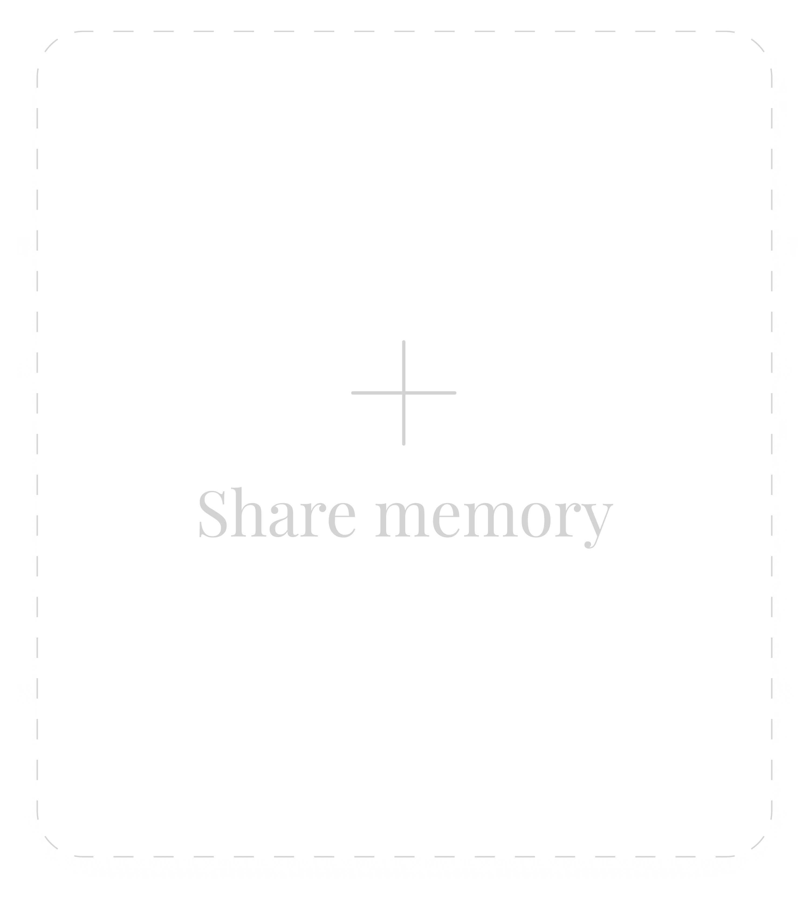
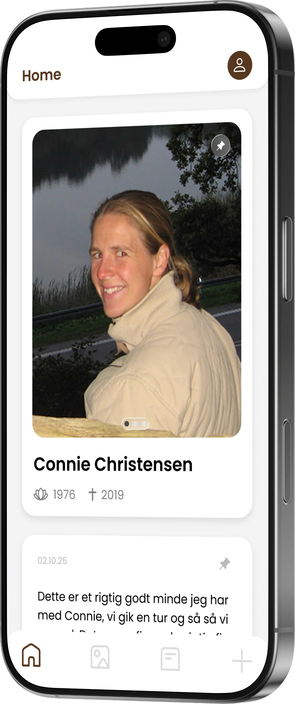

Keep the memories alive with Glimt.
The digital memory book for your loved ones.

The digital memory book for your loved ones.
Glimt is a digital memory book that allows anyone visiting a loved one’s grave to share and discover memories. By scanning the memory book, visitors can upload photos or written notes and read the stories others have left behind.



From purchase to a living memorial, we've made it easy to get started.



Explore the product and find the right solution for your loved one.
Discover Glimt →